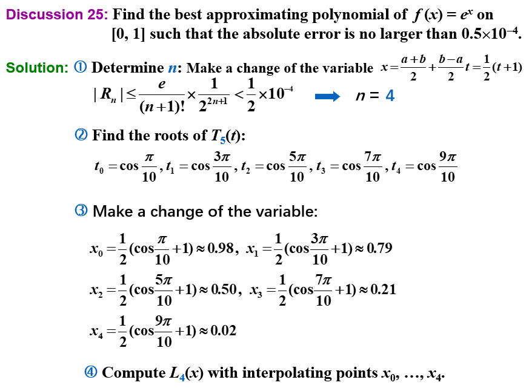

Chap 8: Approximation Theory¶
逼近和插值的区别在于，插值是要求通过所有的数据点，而逼近没有这个限制，而是要求逼近的函数和原函数的误差尽可能小——尽可能接近每个点。
误差表达： 1. Minimax problem： $\(max_{1\leq i \leq m } |P(x_i)-y_i|\)$ - 这用初等技术无法解决 2. Absolute problem： $\(\sum_{i=1}^{m}|P(x_i)-y_i|\)$ - 绝对值函数在零点不可微，可能无法求解多元函数的最小值 3. Least-Squares method $\(\sum_{i=1}^{m}|P(x_i)-y_i|^2\)$ - 此即为最小二乘的误差表达，也是最常用的逼近方法
8.1 Discrete Least Square Approximation¶
[!info] 目标 确定一个多项式 \(P_n(x) = a_0 + a_1 x + \dots a_n x^n\)，用于近似表示一组数据 \(\{(x_i, y_i)\ |\ i = 1, 2, \dots, m\}\)，使得最小二乘误差 \(E_2 = \sum\limits_{i=1}^m [P_N(x_i) - y_i]^2\) 最小化，其中 \(n \ll m\)
-
\(E_2\) 实际上是一个关于 \(a_0, a_1, \dots, a_n\) 的函数，即 \(E_2(a_0, a_1, \dots, a_n) = \sum\limits_{i=1}^m [a_0 + a_1 x_i + \dots + a_n x_i^n - y_i]^2\)。要想让 \(E_2\) 最小化，必要条件是 \(\dfrac{\partial E_2}{\partial a_k} = 0, k = 0, \dots, n\)
-
因此可以得到如下的方程： $$ \begin{align} \dfrac{\partial E_2}{\partial a_k} &= 2\sum\limits_{i=1}^m (P_N(x_i) - y_i) \dfrac{\partial P_n(x_i)}{\partial a_k} \&= 2 \sum\limits_{i=1}^m \Big(\sum\limits_{j=0}^n a_j x_i^j - y_i \Big)x_i^k \notag \ & = 2\Big(\sum\limits_{j=0}^n a_j \Big(\sum\limits_{i=1}^m x_i^{j+k}\Big) - \sum\limits_{j=1}^m y_i x_i^k\Big) \notag = 0 \end{align} $$ 即 $$ \sum\limits_{j=0}^n a_j \Big(\sum\limits_{i=1}^m x_i^{j+k}\Big) = \sum\limits_{j=1}^m y_i x_i^k $$ 令 \(b_k = \sum\limits_{i=1}^m x_i^k, c_k = \sum\limits_{i=1}^m y_i x_i^k\)，可以得到如下矩阵： $$ \begin{bmatrix}b_{0+0} & \dots & b_{0+n} \ \vdots & \vdots & \vdots \ b_{n+0} & \dots & b_{n+n}\end{bmatrix} \begin{bmatrix}a_0 \ \vdots \ a_n\end{bmatrix} = \begin{bmatrix}c_0 \ \vdots \ c_n\end{bmatrix} $$
[!note] 注 - \(P_n(x)\) 的顺序由用户给出，且必须不得超过 \(m-1\)。若 \(n=m-1\)，那么 \(P_n(x)\) 就是 \(E_2 = 0\) 的拉格朗日插值多项式 - 不强制要求 \(P_n(x)\) 是一个多项式 - 如果要考虑权重 \(w_i\) 的话，LSA 的公式就变成：\(E_2 = \sum\limits_{i=1}^m w_i [P_N(x_i) - y_i]^2\)
当 \(n=1\) 时，\(P_1(x)=a_0+a_1x\)，有 $$ \begin{bmatrix} m & \sum\limits_{i=1}^{m}x_i\ \sum\limits_{i=1}^{m}x_i & \sum\limits_{i=1}{m}x_i2 \end{bmatrix} \begin{bmatrix} a_0\ a_1 \end{bmatrix} = \begin{bmatrix} \sum\limits_{i=1}^{m}y_i\ \sum\limits_{i=1}^{m}y_ix_i \end{bmatrix} $$ 所以有 $$ \begin{cases} a_0 = \frac{\sum\limits_{i=1}^{m} x_{i}^{2} \sum\limits_{i=1}^{m} y_{i}-\sum\limits_{i=1}^{m} x_{i} \sum\limits_{i=1}^{m} x_{i} y_{i}}{m \sum\limits_{i=1}^{m} x_{i}{2}-\left(\sum\limits_{i=1}\ a_1 = \frac{m \sum\limits_{i=1}^{m} x_{i} y_{i}-\sum\limits_{i=1}^{m} x_{i} \sum\limits_{i=1}^{m} y_{i}}{m \sum\limits_{i=1}^{m} x_{i}} x_{i}\right)^{2}{2}-\left(\sum\limits_{i=1} \end{cases} $$} x_{i}\right)^{2}
[!example]
Method 1: 令 \(y \approx P(x) = \dfrac{x}{ax + b}\)，寻找 \(a, b\)，使得 \(E_2(a, b) = \sum\limits_{i=1}^m \Big(\dfrac{x_i}{ax_i + b} - y_i\Big)^2\) 最小化。 - 线性化(linearization)：令 \(Y = \dfrac{1}{y}, X = \dfrac{1}{x}\)，那么 \(Y \approx a + b X\) 就是个线性问题 将 \((x_i, y_i)\) 转换为 \((X_i, Y_i)\)，\(a, b\) 就能可以被解出来
Method 2: \(y \approx P(x) = ae^{-\frac{b}{x}}\)，不难发现 \(\ln y \approx \ln a - \dfrac{b}{x}\) - 线性化：令 \(Y = \ln y, X = \dfrac{1}{x}, A = \ln a, B = -b\)，得到 \(Y \approx A + BX\) 这样一个线性问题。 \((x_i, y_i)\) 转换为 \((X_i, Y_i)\)，\(a, b\) 就能被解出来了（\(a = e^A, b = -B, P(x) = ae^{-\frac{b}{x}}\)）

8.2 Orthorgonal Polynomials and Least Squares Approximation¶
[!info] - 离散版本：给定 \(x_1, \dots, x_m;\ y_1, \dots, y_m\)，找到更简单的函数 \(P(x) \approx f(x)\)，使得 \(E = \sum\limits_{i=1}^m |P(x_i) - y_i|^2\) 最小化。 - 连续版本：给定在 \([a, b]\) 上的函数 \(f(x)\)，找到更简单的函数 \(P(x) \approx f(x)\)，使得 \(E = \int_a^b [P(x) - f(x)]^2 dx\) 最小化。
[!definition] 对于一组在区间 \([a, b]\) 上的函数 \(\{\varphi_0(x), \varphi_1(x), \dots, \varphi_n(x)\}\)，当 \(\forall x \in [a, b]\)，\(a_0 \varphi_0(x) + a_1 \varphi_1(x) + \dots + a_n \varphi_n(x) = 0\) 时，有 \(a_0 = a_1 \dots = a_n = 0\)，那么称这组函数是线性独立(linearly independent)的，否则称它们是线性相关(linearly dependent)的。
[!theorem] 如果 \(\varphi_j(x)\) 是一个 \(j\) 次多项式（\(j = 0, \dots, n\)），那么 \(\{\varphi_0(x), \varphi_1(x), \dots, \varphi_n(x)\}\) 在任意区间 \([a, b]\) 上都是线性独立的(linear independent)。
[!proof] 假设结论不成立，根据定义，\(\exists a_0, a_1, \dots, a_n, \forall x \in [a, b]\) 使得 \(P(x) = a_0 \varphi_0(x) + a_1 \varphi_1(x) + \dots + a_n \varphi_n(x) = 0\)。 - 此时 \(P(x)\) 是一个零多项式，\(x^n\) 的系数为0，即 \(a_n = 0\)，那么 \(P(x) = a_0 \varphi_0(x) + a_1 \varphi_1(x) + \dots + a_{n-1} \varphi_{n-1}(x) = 0\)。同理可以推出 \(a_{n-1} = 0\)，以此类推，最终发现所有系数均为0。所以假设不成立，得证。
[!theorem] 令 \(\Pi_n\) 为一组次数至多为 \(n\) 的多项式，如果 \(\{\varphi_0(x), \varphi_1(x), \dots, \varphi_n(x)\}\) 是 \(\Pi_n\) 内一组线性独立的多项式，那么 \(\Pi_n\) 内的任意多项式均可被唯一写做 \(\varphi_0(x), \varphi_1(x), \dots, \varphi_n(x)\) 的一个线性组合。
[!definition] 对于一般的一组线性独立的函数 \(\{\varphi_0(x), \varphi_1(x), \dots, \varphi_n(x)\}\)，关于它们的线性组合 \(P(x) = \sum\limits_{j=0}^n a_j \varphi_j(x)\) 被称为广义多项式(generalized polynomial)。
一些特殊的多项式： - \(\{\varphi_j(x) = \cos jx\}, \{\psi_j(x) = \sin jx\} \Rightarrow \{\varphi_j(x), \psi_j(x)\}\) 得到的是三角多项式(trigonometric polynomial) - \(\{\varphi_j(x) = e^{kjx}, k_i \ne k_j\}\) 得到的是指数多项式(exponential polynomial)
权重函数 (weight function)¶
- 离散的情况下，为了在某些点上分配不同程度的重要性，我们在计算离散最小二乘逼近的误差表达式时附上权重： $\(E = \sum w_i (P(x_i) - y_i)^2\)$
- 连续版本：一个在区间 \(I\) 上的可积分的函数 \(w\) 被称为==权重函数==，它满足 \(\forall x \in I, w(x) \ge 0\)，但 \(w(x)\) 不会在 \(I\) 的任意子区间上消失。 $\(E = \int_a^b w(x) [P(x) - f(x)]^2 dx\)$
内积与范数¶
内积的定义： $\((f, g) = \begin{cases}\sum\limits_{i=1}^m w_i f(x_i) g(x_i) & \text{discrete version} \\ \int_a^b w(x) f(x) g(x) dx & \text{continuous version} \end{cases}\)$ 我们定义范数为 $\(\|f\| = \sqrt{(f, f)}\)$ - 并且当 \((f, g) = 0\) 时，我们称 \(f, g\) 是正交的(orthogonal)
误差表达式可以写为 $\(E = (P - y, P - y) = \| P - y \|^2\)$ 令 \(P(x) = a_0 \varphi_0(x) + a_1 \varphi_1(x) + \dots + a_n \varphi_n(x)\)，然后与求解离散问题类似：\(\dfrac{\partial E}{\partial a_k} = 0\)，即对于所有 \(a_k\) 偏导数为0时误差取最小值。化简可得：\(\sum\limits_{j=0}^n (\varphi_k, \varphi_j) a_j = (\varphi_k, f), k = 0, \dots, n\) - 矩阵形式如下： $$ \begin{bmatrix}(\varphi_0, \varphi_0) & (\varphi_0, \varphi_1) & \dots &(\varphi_0, \varphi_n)\(\varphi_1, \varphi_0) & (\varphi_1, \varphi_1) & \dots &(\varphi_1, \varphi_n) \ \vdots& \vdots & \ddots & \vdots \ (\varphi_n, \varphi_0) & (\varphi_n, \varphi_1) & \dots& (\varphi_n, \varphi_n)\end{bmatrix} \begin{bmatrix}a_0 \ \vdots \ a_n\end{bmatrix} = \begin{bmatrix}(\varphi_0, f) \ \vdots \ (\varphi_n, f)\end{bmatrix} = \varepsilon $$
[!Example] 使用 \(y = a_0 + a_1 x + a_2 x^2\ (w \equiv 1)\) 近似点集 \(\{(1, 4), (2, 10), (3, 18), (4, 26)\}\) - Solution

构造式¶
当使用 \(\varphi_j(x) = x^j\) 和 \(w(x) \equiv 1\) 近似 \(f(x) \in C[0, 1]\) 时，\((\varphi_i, \varphi_j) = \int_0^1 x^i x^j dx = \dfrac{1}{i + j +1}\)（希尔伯特矩阵 (Hilbert matrix)）。Hilbert 矩阵是一个病态矩阵，在求解中往往因为舍入误差而导致结果不准确。
改进：通过正交化来构建正交多项式(orthogonal polynomials)，也就是让范数矩阵变为对角矩阵。此时有 \(a_k = \dfrac{(\varphi_k, f)}{(\varphi_k, \varphi_k)}\)
[!theorem] 对于一组在 \([a, b]\) 的多项式函数 \(\{\varphi_0(x), \varphi_1(x), \dots, \varphi_n(x)\}\) 以及一个权重函数 \(w\)，当满足以下条件时，我们认为这些函数是正交的：
$\(\varphi_0 (x) = 1, \varphi_1(x) = x - B_1, \varphi_k(x) = (x - B_k)\varphi_{k-1}(x) - C_k \varphi_{k-2}(x)\)$ 其中 \(B_k = \dfrac{(x \varphi_{k-1}, \varphi_{k-1})}{(\varphi_{k-1}, \varphi_{k-1})}, C_k = \dfrac{(x \varphi_{k-1}, \varphi_{k-2})}{( \varphi_{k-2}, \varphi_{k-2})}\)[!example] （和之前基本一样）使用 \(y = c_0 + c_1 x + c_2 x^2, w \equiv 1\) 近似点集 \(\{(1, 4), (2, 10), (3, 18), (4, 26)\}\)

正交多项式近似¶
用一个有被容忍值约束的误差的多项式，近似一个给定的函数。 - 输入：数据个数 \(m\)；\(x[m];\ y[m]\)；权重 \(w[m]\)；容忍值 \(TOL\)；多项式最大阶数 \(Max_n\) - 输出：近似多项式的系数
Step 1 Set phi_0(x) ≡ 1;
a_0 = iprod(phi_0, y) / iprod(phi_0, phi_0);
P(x) = a_0 * phi_0(x);
err = iprod(y, y) - a_0 * iprod(phi_0, y);
Step 2 Set B_1 = iprod(x * phi_0, phi_0) / iprod(phi_0, phi_0);
phi_1(x) = x - B_1;
a_1 = iprod(phi_1, y) / iprod(phi_1, phi_1);
P(x) += a_1 * phi_1(x);
err -= a_1 * iprod(phi_1, y);
Step 3 Set k = 1;
Step 4 while ((k < Max_n) && (|err| >= TOL)) do steps 5-7:
Step 5 k++;
Step 6 B_k = iprod(x * phi_1, phi_1) / iprod(phi_1, phi_1);
C_k = iprod(x * phi_1, phi_0) / iprod(phi_0, phi_0);
phi_2(x) = (x - B_k) * phi_1(x) - C_k * phi_0(x);
a_k = iprod(phi_2, y) / iprod(phi_2, phi_2);
Step 7 Set phi_0(x) = phi_1(x); phi_1(x) = phi_2(x);
Step 8 Output(); STOP.
误差分析¶
8.3 Chebyshev Polynomials and Economization of Power Series¶
1. Targets¶
目标 1.0：找到 \(n\) 阶多项式使得 \(||P_n-f||_{\infty}\) 最小化。
[! definition] 如果 \(P(x_0) - f(x_0) = \pm \|P - f\|_{\infty}\)，那么此时 \(x_0\) 被称为 \((\pm)\) 偏差点(deviation point)（也就是正好在误差边界上的点）。
多项式 \(P_n\) 有以下特征： - 如果 \(f \in C[a, b]\) 且 \(f\) 不是一个 \(n\) 阶多项式，那么存在一个唯一的多项式 \(P_n(x)\)，使得 \(\|P_n - f\|_{\infty}\) 最小化 - \(P_n(x)\) 存在，且必须同时有正负偏差点（否则有更小的误差） - 切比雪夫定理(Chebyshev Theorem) - \(P_n(x)\) 最小化 \(\|P_n - f\|_{\infty}\ \Leftrightarrow P_n(x)\) 至少有 \(n+2\) 个关于 \(f\) 的正负偏差点。也就是说，存在一组点 \(a \le t_1 < \dots < t_{n+2} \le b\) ，使得 $\(P_n(t_k) - f(t_k) = \pm(-1)^k \|P_n - f\|_{\infty}\)$ - 集合 \(\{t_k\}\) 被称为切比雪夫交替序列(Chebyshev alternating sequence)。 >\(P_n(x) - f(x)\) 至少有 \(n+1\) 个根。
目标 2.0：确定插值点 \(\{x_0, \dots, x_n\}\) 使得 \(P_n(x)\) 最小化余项 \(|P_n(x) - f(x)| = |R_n(x)| = \Big|\dfrac{f^{(n+1)}(\xi)}{(n+1)!} \prod\limits_{i=0}^n (x - x_i)\Big|\)
目标 2.1：找到 \(\{x_1, \dots, x_n\}\) 使得 \(\|w_n\|_{\infty}\) 在 \([-1, 1]\) 最小化，其中 \(w_n(x) = \prod\limits_{i=1}^n (x - x_i)\)
注意到 （此处的 \(P_{n-1}\) 是指 \(n-1\) 阶的多项式） $\(w_n(x) = x^n - P_{n-1}(x)\)$ 问题就变成了：
目标 3.0：找到多项式 \(P_{n-1}(x)\)，使得 \(\|x^n - P_{n-1}(x)\|_{\infty}\) 在 \([-1, 1]\) 上最小。
根据切比雪夫定理，我们知道 \(P_{n-1}(x)\) 有 \(n+1\) 个关于 \(x^n\) 的偏差点，也就是说 \(w_n(x)\) 在 \(n+1\) 个点上交替获得最大值和最小值。
2. Chebyshev Polynomials¶
为了实现上面的目标，我们先想到三角函数，考虑 \(\cos (n \theta)\) 在 \([0, \pi]\) 上有 \(n+1\) 个交替的最大值和最小值。但是 \(\cos(n \theta)\) 不是多项式。又由于 \(\cos(n \theta)\) 可以表示为 \(\sum\limits_{k=0}^n a_k(\cos\theta)^k\)，这就是我们想要的多项式形式。
令 \(x = \cos (\theta)\)，那么 \(x \in [-1, 1]\)。我们称 \(T_n(x) = \cos (n\theta) = \cos (n \cdot \text{arc} \cos x)\) 为切比雪夫多项式(Chebyshev polonomial)。
切比雪夫多项式的性质： - \(T_n(x)\) 假设在 \(t_k = \cos \Big(\dfrac{k}{n} \pi\Big) (k = 0, 1, \dots, n)\) 上，在最大值1和最小值-1之间交替变换 - 也就是说 \(T_n(t_k) = (-1)^k \|T_n(x)\|_{\infty}\) - \(T_n(x)\) 有 \(n\) 个根 \(x_k = \cos \Big(\dfrac{2k - 1}{2n} \pi \Big)(k = 1, \dots, n)\) - \(T_n(x)\) 有递推关系式： $\(\begin{align}T_0(x) &= 1,\\ T_1(x) &= x, \\T_{n+1}(x) &= 2xT_n(x) - T_{n-1}(x),\quad n=2,3,\dots\end{align}\)$ - \(T_n(x)\) 是一个最高阶系数为 \(2^{n-1}\) 的 \(n\) 阶多项式 - \(\{T_0(x), T_1(x), \dots\}\) 在 \([-1, 1]\) 上关于权重函数 \(w(x) = \dfrac{1}{\sqrt{1 - x^2}}\) 上正交，也就是说 $\((T_n, T_m) = \int_{-1}^1 \dfrac{T_n(x) T_m(x)}{\sqrt{1-x^2}} dx = \begin{cases}0 & n \ne m \\ \pi & n = m = 0 \\ \dfrac{\pi}{2} & n = m \ne 0\end{cases}\)$ 回到之前提到的目标： - 目标 3.0：找到多项式 \(P_{n-1}(x)\)，使得 \(\|x^n - P_{n-1}(x)\|_{\infty}\) 在 \([-1, 1]\) 上最小。 - 此时 \(w_n(x) = x^n - P_{n-1}(x) = \dfrac{T_n(x)}{2^{n-1}}\) - 目标 2.1：找到 \(\{x_1, \dots, x_n\}\) 使得 \(\|w_n\|_{\infty}\) 在 \([-1, 1]\) 最小化，其中 \(w_n(x) = \prod\limits_{i=1}^n (x - x_i)\) - 此时 \(\min\limits_{w_n \in \widetilde{\Pi}_n} \|w_n\|_{\infty} = \Big\|\dfrac{T_n(x)}{2^{n-1}} \Big\|_{\infty} = \dfrac{1}{2^{n-1}}\)。 - 其中：\(\widetilde{\Pi}_n\) 是 \(n\) 阶的首一多项式，所以差值点 \(\{x_1, \dots, x_n\}\) 是 \(T_n(x)\) 的 \(n\) 个根 - 目标 2.0：确定插值点 \(\{x_0, \dots, x_n\}\) 使得 \(P_n(x)\) 最小化余项 \(|P_n(x) - f(x)| = |R_n(x)| = \Big|\dfrac{f^{(n+1)}(\xi)}{(n+1)!} \prod\limits_{i=0}^n (x - x_i)\Big|\) - 取 \(T_{n+1}(x)\) 上的 \(n+1\) 个根作为插值点 \(\{x_0, \dots, x_n\}\) 能够使得余项最小，即 $$ \max_{x\in[-1,1]}|f(x)-P_n(x)|\leq \frac{1}{2^n(n+1)!}\max_{x\in [-1,1]}|f^{(n+1)}(x)| $$ - 使用线性变换 \(x=\frac{b-a}{2}t+\frac{b+a}{2}\)，我们可以将其推广到闭区间 \([a,b]\) 上。
[!example] 找到在 \([0, 1]\) 上关于 \(f(x) = e^x\) 的最佳近似多项式，使得绝对误差不超过 \(0.5 \times 10^{-4}\)。

3. Economization of Power Series¶
目标：给定 \(P_n(x) \approx f(x)\)，幂级数经济化(economization)的目标是在确保精度损失最小的情况下，降低多项式的次数。
考虑一个任意的 \(n\) 阶多项式 \(P_n(x) = a_n x^n + a_{n-1} x^{n-1} + \dots + a_1 x + a_0\)，对应的多项式 \(P_{n-1}(x)\) 通过移除 \(n\) 阶多项式 \(Q_n(x)\)（\(x^n\) 项的系数为 \(a_n\)）得到。那么 \(\max\limits_{[-1, 1]} |f(x) - P_{n-1}(x)| \le \max\limits_{[-1, 1]} |f(x) - P_n(x)| + \max\limits_{[-1, 1]} |Q_n(x)|\)，而 \(Q_n(x)\) 能够反映精度的损失。
为了最小化精度损失，\(Q_n(x)\) 必须为 \(a_n \times \dfrac{T_n(x)}{2^{n-1}}\)
[!note] - 对于一般区间 \([a, b]\)，需要改变变量。也就是说，令 \(x = [(b - a) t + (a + b)] / 2\)，然后寻找对于 \(f(t)\) 在 \([-1, 1]\) 上的（近似）多项式 \(P_n(t)\)，最终得到 \(P_n(x)\)。 - 另一种方法是用 \(T_0(x), \dots, T_k(x)\) 的线性组合来表示每一项 \(x^k\)。比如，\(x = T_1(x)\)，且 \(x^3 = [T_3(x) + 3T_1(x)] / 4\)。然后只要从原始多项式中移除切比雪夫函数就行了。
[!example]